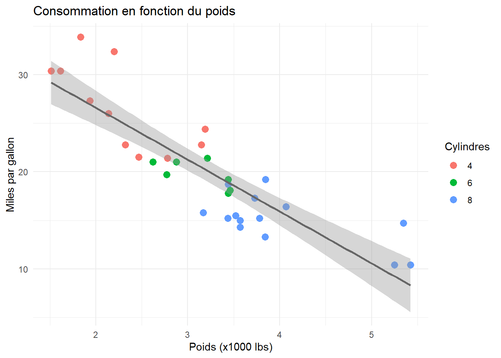
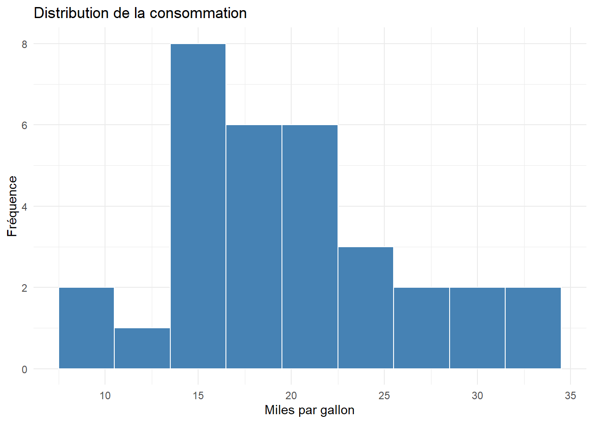
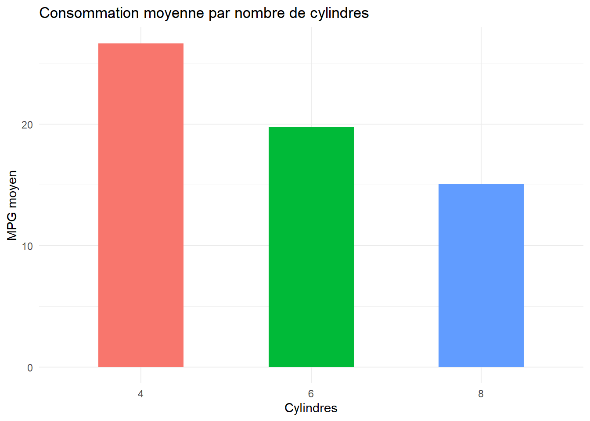

mtcars[5:9,c(2,4)] cyl hp
Hornet Sportabout 8 175
Valiant 6 105
Duster 360 8 245
Merc 240D 4 62
Merc 230 4 95Dans le cadre du séminaire, les étudiant\(\cdot\)es seront amené\(\cdot\)es à employer des méthodes économétrique afin d’analyser des données et déterminer si l’on peut observer une discrimination sur un segment de marché. Ceci nécessite de recourir à un langage de programmation statistique, à un environnement de programmation et à des librairies. L’objectif de ce parcours est d’expliquer ce que cela signifie et d’introduire les étudiant\(\cdot\)es à leur utilisation.
Un langage de programmation est un outil qui nous permet de communiquer avec un ordinateur afin de lui faire exécuter des tâches. Il existe divers langages de programmation conçus selon les objectifs dressés. Dans notre cas, nous souhaitons exécuter des opérations mathématiques et statistiques: nous nous orienterons donc vers un langage de programmation à tel but. Ces langages de programmation permettent donc de traiter des données et de produire des statistiques descriptives, des graphiques, des cartes et bien sûr des régressions.
Parmi l’ensemble des langages, R présente plusieurs avantages:
R est un langage open-source. Le logiciel est gratuit et quiconque peut disposer du code afin de l’améliorer ou d’en proposer des variantes.R présente une importante communauté d’utilisateur\(\cdot\)ices qui contribuent à la résolution de problème et à l’évolution du langage.R. Les techniques économétriques de pointes y sont généralement accessibles.Ces contributions sont faites sous forme de librairies : des fonctions pré-faites qui permettent (i) de simplifier l’usage de R et (ii) de réaliser des tâches complexes. Avant de discuter l’utilisation des librairies en R, nous allons présenter l’environnement dans lequel nous utiliserons R.
L’environnement de développement le plus populaire pour R est Rstudio. Tout comme son langage, Rstudio est un logiciel libre et gratuit. Tel que représenté ci-dessous, Rstudio affiche 4 cadrans.

Le cadran 1 est l’espace du script. C’est là que l’on rédige son code.
Le cadran 2 est l’espace des données. C’est là que sont listés tous les data.frame, ou d’autres “objets” tels que des listes, des vecteurs de données, ou des résultats de régressions.
Le cadran 3 est constitué de plusieurs panneaux, les principaux étant:
Le cadran 4 est l’espace de console. C’est là qu’est interprété le code et que R affiche les résultats de ses calculs.
Lorsqu’un projet est entamé, il est de bon usage de créer un projet R. Un projet est un espace dans l’ordinateur où se trouve tout le matériel relatif à un projet. Lorsqu’un projet est construit, il est possible sauvegarder son avancée, de fermer Rstudio et de reprendre ultérieurement son travail où il a été laissé. À la réouverture d’un projet, l’environnement de travail affiche automatiquement les scripts, les data.frame et le dossier dans lequel se trouve le matériel au sein du disque dur de l’ordinateur.
File > New project en veillant à choisir pertinemment le nom et l’emplacement dans votre ordinateur (pas dans un fichier appartenant à un cloud par exemple). Lorsque le dossier du projet Rstudio est créé, vous pouvez ajouter votre base de données dans ce dossier.File > New file > R script.Désormais, vous disposez d’un espace de travail dans lequel vous pourrez analyser vos données. Pour ce faire, vous emploierez une diversité d’outils. Néanmoins, tous les outils ne sont pas disponibles par défaut sur R: vous devrez installer des “boîtes à outils” que sont les librairies. La prochaine section discute l’usage des librairies, après quoi nous passerons à l’analyse de données et la visualisation de données.
Afin de vous entraîner, il est suggéré de lancer Rstudio et d’exécuter les codes R sur votre machine en même temps que vous parcourez ce tutoriel, afin de vous familiariser avec le langage.
Afin d’illustrer l’intérêt d’une librairie, voyons le fonctionnement primitif de R.Le langage de programmation R est utilisable avec un ensemble de fonctions que l’on appelle base functions. Ces fonctions de base permettent de réaliser des opérations fondamentales. Outre ces fonctions, il existe une syntaxe basique qui nous permet d’interagir avec des objets de R. Prenons l’example d’une base de données d’automobiles, nommée mtcars. Elle est constiutée de 32 observations (32 modèles) et de 11 variables. L’objet de base de données pour R est le data.frame.
En base R, il est possible de sélectionner précisément des rangées et des colonnes d’une base de donnée df. Si l’on souhaite prendre les rangées de 5 à 9 et les colonnes 2(cyl pour cylindres) et 4 (hp pour horsepower), il est possible de procéder de la façon suivante:
mtcars[5:9,c(2,4)] cyl hp
Hornet Sportabout 8 175
Valiant 6 105
Duster 360 8 245
Merc 240D 4 62
Merc 230 4 95Où les crochets juxtaposés à un objet data.frame indiquent à R que l’on fixe les [rangées,colonnes] que l’on souhaite.L’objet rendu est à nouveau un data.frame avec lequel il sera à nouveau possible d’interagir avec des crochets.
Imaginons que l’on souhaite ajouter un degré de complexité et, par exemple, ne conserver que les observations pour lesquelles le poids wt (colonne 6) est supérieur à \(3.4\). En base R, nous allons ajouter une deuxième couche de filtre en réemployant des crochets:
mtcars[5:9,c(2,4,6)][which(mtcars[5:9,"wt"]>3.4),] cyl hp wt
Hornet Sportabout 8 175 3.44
Valiant 6 105 3.46
Duster 360 8 245 3.57L’exercice devient laborieux et très rapidement illisible. Tidyverse est une librairie qui permet, entre autre, d’interagir beaucoup plus simplement avec des data.frame. Utiliser une librairie nécessite deux étapes:
1. Installer la librairie 2. Charger la librairie
Il ne faut installer la librairie qu’une seule fois sur sa machine. En revanche, il sera nécessaire de charger une librairie à chaque fois que l’on redémarre R. Dans votre script, rédigez:
install.packages("tidyverse") # Installation de la librairie sur la machine
library('tidyverse') # Chargement de la librairie dans la sessionPour exécuter ce code, cliquez sur Run en haut à droite du cadran 1. Ceci exécutera l’intégralité du code contenu dans votre script. Si vous souhaitez exécuter partiellement votre code, sélectionnez le morceau de code en question avec votre curseur et composez CTRL + Enter. Votre console devrait afficher:
── Attaching core tidyverse packages ──────────────────────── tidyverse 2.0.0 ──
✔ forcats 1.0.0 ✔ stringr 1.5.1
✔ lubridate 1.9.3 ✔ tibble 3.3.1
✔ readr 2.1.5
── Conflicts ────────────────────────────────────────── tidyverse_conflicts() ──
✖ readr::col_factor() masks scales::col_factor()
✖ purrr::discard() masks scales::discard()
✖ dplyr::filter() masks stats::filter()
✖ stringr::fixed() masks recipes::fixed()
✖ dplyr::lag() masks stats::lag()
✖ readr::spec() masks yardstick::spec()
ℹ Use the conflicted package (<http://conflicted.r-lib.org/>) to force all conflicts to become errorsIl est désormais possible de recourir aux outils du Tidyverse. Le premier outil que nous allons voir est le pipe %>%. Il permet d’alléger la rédaction de transformation de données ainsi que sa lecture. Formellement, les %>% transforment x %>% f(y) en f(x,y).
Grâce au pipe, il sera possible de lire et interpréter le fonctionnement d’un code de gauche à droite, en le combinant à diverses fonctions. Reprenons l’exemple précédent dans lequel nous sélectionnions des modèles selon la condition \(wt>3.4\). En base R, nous rédigions:
mtcars[5:9,c(2,4,6)][which(mtcars[5:9,"wt"]>3.4),]Nous procédions à 3 opérations: (i) couper certaines rangées du data.frame, (ii) sélectionner 3 variables et (iii) filtrer conditionnellement les observations. Grâce aux outils du tidyverse, ceci peut être fait, dans le même ordre, de la façon suivante:
mtcars %>% slice(5:9) %>% select(cyl,hp,wt) %>% filter(wt>3.4) cyl hp wt
Hornet Sportabout 8 175 3.44
Valiant 6 105 3.46
Duster 360 8 245 3.57Beaucoup plus lisible !
Les sections suivantes ont pour objectif de présenter synthétiquement des fonctions utiles au traitement de données, après quoi nous verrons comment effectuer des régressions et visualiser nos données.
filter() — Filtrer des lignesfilter() conserve uniquement les lignes qui satisfont une condition logique.
# Voitures avec plus de 6 cylindres et moins de 3 tonnes
mtcars %>% filter(cyl > 6, wt < 3) [1] mpg cyl disp hp drat wt qsec vs am gear carb
<0 rows> (or 0-length row.names)slice() — Sélectionner des lignes par position# Lignes 1 à 5
mtcars %>% slice(1:5) mpg cyl disp hp drat wt qsec vs am gear carb
Mazda RX4 21.0 6 160 110 3.90 2.620 16.46 0 1 4 4
Mazda RX4 Wag 21.0 6 160 110 3.90 2.875 17.02 0 1 4 4
Datsun 710 22.8 4 108 93 3.85 2.320 18.61 1 1 4 1
Hornet 4 Drive 21.4 6 258 110 3.08 3.215 19.44 1 0 3 1
Hornet Sportabout 18.7 8 360 175 3.15 3.440 17.02 0 0 3 2select() — Sélectionner des colonnes# Garder uniquement le nombre de cylindres, la puissance et le poids
mtcars[1:5,] %>% select(cyl, hp, wt) # N'affiche que les 5 premières observations cyl hp wt
Mazda RX4 6 110 2.620
Mazda RX4 Wag 6 110 2.875
Datsun 710 4 93 2.320
Hornet 4 Drive 6 110 3.215
Hornet Sportabout 8 175 3.440# Exclure une colonne avec le signe -
mtcars[1:5,] %>% select(-qsec) mpg cyl disp hp drat wt vs am gear carb
Mazda RX4 21.0 6 160 110 3.90 2.620 0 1 4 4
Mazda RX4 Wag 21.0 6 160 110 3.90 2.875 0 1 4 4
Datsun 710 22.8 4 108 93 3.85 2.320 1 1 4 1
Hornet 4 Drive 21.4 6 258 110 3.08 3.215 1 0 3 1
Hornet Sportabout 18.7 8 360 175 3.15 3.440 0 0 3 2rename() — Renommer des colonnes# Syntaxe : rename(nouveau_nom = ancien_nom)
mtcars[1:5,] %>% rename(poids = wt, puissance = hp) mpg cyl disp puissance drat poids qsec vs am gear carb
Mazda RX4 21.0 6 160 110 3.90 2.620 16.46 0 1 4 4
Mazda RX4 Wag 21.0 6 160 110 3.90 2.875 17.02 0 1 4 4
Datsun 710 22.8 4 108 93 3.85 2.320 18.61 1 1 4 1
Hornet 4 Drive 21.4 6 258 110 3.08 3.215 19.44 1 0 3 1
Hornet Sportabout 18.7 8 360 175 3.15 3.440 17.02 0 0 3 2mutate() — Créer ou transformer des colonnes# Convertir le poids de milliers de livres en kilogrammes
# La syntaxe de mutate est : data.frame %>% mutate(NouvelleVariable= transformation de variables))
mtcars[1:5,] %>% mutate(poids_kg = wt * 453.6) %>% select(wt, poids_kg) wt poids_kg
Mazda RX4 2.620 1188.432
Mazda RX4 Wag 2.875 1304.100
Datsun 710 2.320 1052.352
Hornet 4 Drive 3.215 1458.324
Hornet Sportabout 3.440 1560.384group_by() et summarise() — Agréger par groupegroup_by() seul ne modifie pas les données visuellement, mais il indique à R d’effectuer les opérations suivantes par groupe.
# Consommation moyenne et puissance moyenne selon le nombre de cylindres
mtcars %>%
group_by(cyl) %>%
summarise(mpg_moyen = mean(mpg),hp_moyen = mean(hp),
n_voitures = n()
)# A tibble: 3 × 4
cyl mpg_moyen hp_moyen n_voitures
<dbl> <dbl> <dbl> <int>
1 4 26.7 82.6 11
2 6 19.7 122. 7
3 8 15.1 209. 14lm()Une régression OLS (Ordinary Least Squares) modélise la relation entre une variable dépendante \(y\) et des variables explicatives \(X\) :
\[y = \beta_0 + \beta_1 x_1 + \beta_2 x_2 + \cdots + \beta_k x_k + \varepsilon\]
On cherche les coefficients \(\hat{\beta}\) qui minimisent la somme des carrés des résidus :
\[\hat{\beta} = \underset{\beta}{\arg\min} \sum_{i=1}^{n}(y_i - \hat{y}_i)^2\] et obtenir
\[\hat{y} = \hat{\beta}_0 + \hat{\beta}_1 x_1 + \hat{\beta}_2 x_2 + \cdots + \hat{\beta}_k x_k \]
lm()Il existe une fonction en R qui permet de calculer ces coefficients, la fonction lm() (pour linear model). Appliquons cette fonction à la base de données de téléphones discutée en séance d’introduction. Celle-ci était constituée de 28 observations et des variables suivantes :
[1] "Produit" "price" "Qualité de la caméra"
[4] "Année d'introduction" "Marque" "Garantie"
[7] "Poids" "Couleur" "Processeur"
[10] "Densité de pixels" "RAM" "stockage"
[13] "megapixels" "age" "meanprice" La syntaxe de base est lm(y ~ x1 + x2, data = ...).
modele <- lm(price~ Poids + megapixels + factor(age) + RAM +
stockage + (`Qualité de la caméra`)+(Marque),
data = phonesdf)
summary(modele)
Call:
lm(formula = price ~ Poids + megapixels + factor(age) + RAM +
stockage + (`Qualité de la caméra`) + (Marque), data = phonesdf)
Residuals:
Min 1Q Median 3Q Max
-135.255 -26.741 2.758 34.611 80.695
Coefficients:
Estimate Std. Error t value Pr(>|t|)
(Intercept) -577.9407 205.2751 -2.815 0.0124 *
Poids 4.6105 0.8158 5.652 3.61e-05 ***
megapixels -0.5183 0.7165 -0.723 0.4799
factor(age)3 17.6237 69.5645 0.253 0.8032
RAM 45.4237 18.3874 2.470 0.0251 *
stockage 1.0326 0.1340 7.705 9.00e-07 ***
`Qualité de la caméra`Excellent 187.4955 99.3178 1.888 0.0773 .
`Qualité de la caméra`Très bien 81.9924 51.7328 1.585 0.1325
MarqueCoolblue refurbished -114.3070 98.6721 -1.158 0.2637
MarqueGoogle -595.6554 65.6759 -9.070 1.05e-07 ***
MarqueOnePlus -787.6064 58.5518 -13.451 3.87e-10 ***
MarqueSamsung -519.6706 37.2459 -13.952 2.25e-10 ***
---
Signif. codes: 0 '***' 0.001 '**' 0.01 '*' 0.05 '.' 0.1 ' ' 1
Residual standard error: 60.41 on 16 degrees of freedom
Multiple R-squared: 0.9911, Adjusted R-squared: 0.985
F-statistic: 162.4 on 11 and 16 DF, p-value: 3.022e-14Lecture des résultats :
- Estimate : valeur de \(\hat{\beta}\) pour chaque prédicteur
- Pr(>|t|) : p-valeur — un astérisque
*indique une significativité à 5 %- R² : part de variance de \(y\) expliquée par le modèle
coef(modele) (Intercept) Poids
-577.940655 4.610544
megapixels factor(age)3
-0.518293 17.623707
RAM stockage
45.423687 1.032591
`Qualité de la caméra`Excellent `Qualité de la caméra`Très bien
187.495546 81.992351
MarqueCoolblue refurbished MarqueGoogle
-114.307031 -595.655406
MarqueOnePlus MarqueSamsung
-787.606439 -519.670553 confint(modele) 2.5 % 97.5 %
(Intercept) -1013.104524 -142.776785
Poids 2.881121 6.339966
megapixels -2.037236 1.000650
factor(age)3 -129.846376 165.093790
RAM 6.444133 84.403241
stockage 0.748476 1.316707
`Qualité de la caméra`Excellent -23.048869 398.039962
`Qualité de la caméra`Très bien -27.676261 191.660963
MarqueCoolblue refurbished -323.482562 94.868501
MarqueGoogle -734.882024 -456.428788
MarqueOnePlus -911.730655 -663.482222
MarqueSamsung -598.628372 -440.712734gtsummaryPrésenter les résultats d’une régression dans un rapport nécessite un tableau lisible et formaté. La librairie gtsummary permet de produire automatiquement des tableaux de régression, exportables en Word.
Installez et chargez les librairies nécessaires :
install.packages("gtsummary")
install.packages("flextable")library(gtsummary)
library(flextable)tbl_regression() prend en entrée un objet lm() et produit automatiquement un tableau mis en forme avec les coefficients, intervalles de confiance et p-valeurs.
# On suppose que le modèle a déjà été estimé :
# mmodele <- lm(y ~ x1 + x2, data = mes_données)
tbl <- tbl_regression(modele, intercept = TRUE)
tbl| Characteristic | Beta | 95% CI | p-value |
|---|---|---|---|
| (Intercept) | -578 | -1,013, -143 | 0.012 |
| Poids | 4.6 | 2.9, 6.3 | <0.001 |
| megapixels | -0.52 | -2.0, 1.0 | 0.5 |
| factor(age) | |||
| 1 | — | — | |
| 3 | 18 | -130, 165 | 0.8 |
| RAM | 45 | 6.4, 84 | 0.025 |
| stockage | 1.0 | 0.75, 1.3 | <0.001 |
| Qualité de la caméra | |||
| Bon | — | — | |
| Excellent | 187 | -23, 398 | 0.077 |
| Très bien | 82 | -28, 192 | 0.13 |
| Marque | |||
| Apple | — | — | |
| Coolblue refurbished | -114 | -323, 95 | 0.3 |
| -596 | -735, -456 | <0.001 | |
| OnePlus | -788 | -912, -663 | <0.001 |
| Samsung | -520 | -599, -441 | <0.001 |
| Abbreviation: CI = Confidence Interval | |||
Note : l’argument
intercept = TRUEforce l’affichage de la constante \(\hat{\beta}_0\), qui est masquée par défaut.
Une fois le tableau construit, on le convertit en objet flextable puis on l’exporte directement en fichier .docx :
gt <- as_flex_table(tbl) # Conversion en flextable
flextable::save_as_docx(gt, path = "reg_table.docx") # Export en WordLe fichier reg_table.docx apparaît dans le dossier de votre projet et peut être directement intégré à un rapport.
ggplot2ggplot2 est une librairie de visualisation basée sur la grammaire des graphiques, qui consiste à construire un graphique couche par couche en ajoutant des éléments superposés. Sa flexibilité et la lisibilité de son code en font la librairie de visualisation la plus utilisée dans l’écosystème R.
ggplot2 repose sur une grammaire des graphiques : on empile des couches (layers) avec +.
ggplot(data, aes(x = ..., y = ...)) + # données et axes
geom_*() + # type de graphique
labs() + # titres et étiquettes
theme_*() # style visuelmtcars %>%
ggplot(aes(x = wt, y = mpg, color = factor(cyl))) +
geom_point(size = 3) +
geom_smooth(method = "lm", se = TRUE, color = "grey40") +
labs(
title = "Consommation en fonction du poids",
x = "Poids (x1000 lbs)",
y = "Miles par gallon",
color = "Cylindres"
) +
theme_minimal()
mtcars %>%
mutate(cyl = factor(cyl)) %>%
ggplot(aes(x = cyl, y = mpg, fill = cyl)) +
geom_boxplot(alpha = 0.7) +
labs(
title = "Distribution de la consommation par nombre de cylindres",
x = "Nombre de cylindres",
y = "Miles par gallon"
) +
theme_minimal() +
theme(legend.position = "none")
mtcars %>%
ggplot(aes(x = mpg)) +
geom_histogram(binwidth = 3, fill = "steelblue", color = "white") +
labs(
title = "Distribution de la consommation",
x = "Miles par gallon",
y = "Fréquence"
) +
theme_minimal()
ggplot2 et dplyrOn peut passer directement un tableau transformé à ggplot2 via le pipe :
mtcars %>%
group_by(cyl) %>%
summarise(mpg_moyen = mean(mpg)) %>%
mutate(cyl = factor(cyl)) %>%
ggplot(aes(x = cyl, y = mpg_moyen, fill = cyl)) +
geom_col(width = 0.5) +
labs(
title = "Consommation moyenne par nombre de cylindres",
x = "Cylindres",
y = "MPG moyen"
) +
theme_minimal() +
theme(legend.position = "none")
Enfin, nous pouvons représenter les résultats de notre régression hédonique sur les prix de smartphones avec ggplot.
library("tidymodels")
# tidy models est une libraire utile pour transformer nos tables de régressions en data.frame
# ggplot a besoin comme élément d'entrée de data.frame pour produire des graphiques
tidy(modele)%>%
# tidy transforme l'objet modele qui est un format lm en data.frame, interprétable par ggplot.
mutate(term = reorder(term, estimate),
conf.low = estimate - 1.96 * std.error,
conf.high = estimate + 1.96 * std.error) %>%
ggplot(aes(x = estimate, y = term)) +
geom_vline(xintercept = 0, linetype = "dashed", color = "grey50") +
geom_errorbarh(aes(xmin = conf.low, xmax = conf.high),
height = 0.2,
color = "grey40") +
geom_point(size = 3, color = "#0072B2") +
labs(x = "Coefficient estimate",
y = NULL,
title = "Coefficient plot with 95% confidence intervals") +
theme_minimal(base_size = 13)
Rstudio produira dans le cadran 3 un graphique. Il est possible d’exporter cette image sous fichier .png et de l’enregistrer afin de l’inclure dans un document de traitement de texte.